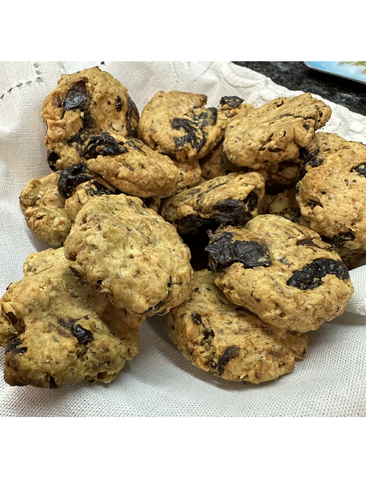

Doces · Biscoitos
Biscoitinhos de ameixa-preta

Ingredientes
- 1 xícara de manteiga
- 1 xícara de açúcar mascavo
- 1/2 xícara de açúcar
- 2 ovos
- 1 colher (sopa) de vinagre
- 1 colher (chá) de essência de baunilha
- 1 xícara de ameixas-pretas secas picadas
- 4 xícaras de farinha de trigo
- 1 colher (chá) de bicarbonato de sódio
- 1 colher (chá) de sal
- 1 xícara de nozes picadas
Modo de preparo
- Bata a manteiga com os açúcares. Acrescente os ovos um a um até creme leve.
- Junte vinagre, baunilha, ameixas, ingredientes secos e nozes. Forme 3 rolos de cerca de 5 cm de diâmetro.
- Embrulhe em papel-alumínio e leve à geladeira por 1 noite.
- Preaqueça o forno em temperatura média (200 °C). Corte rodelas finas, disponha em assadeira sem untar e asse até sequinhos (cerca de 12 minutos). Deixe esfriar e congele.
Observação: Congelamento: congele cobertos com plástico, passe para saco plástico sem ar. Descongelamento: temperatura ambiente por 1 hora. Também pode abrir a massa gelada e cortar com cortadores.